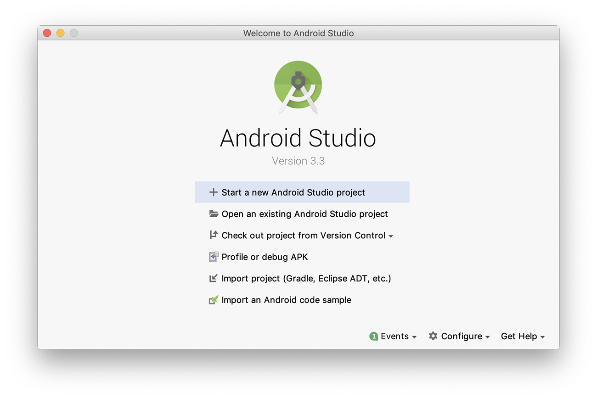
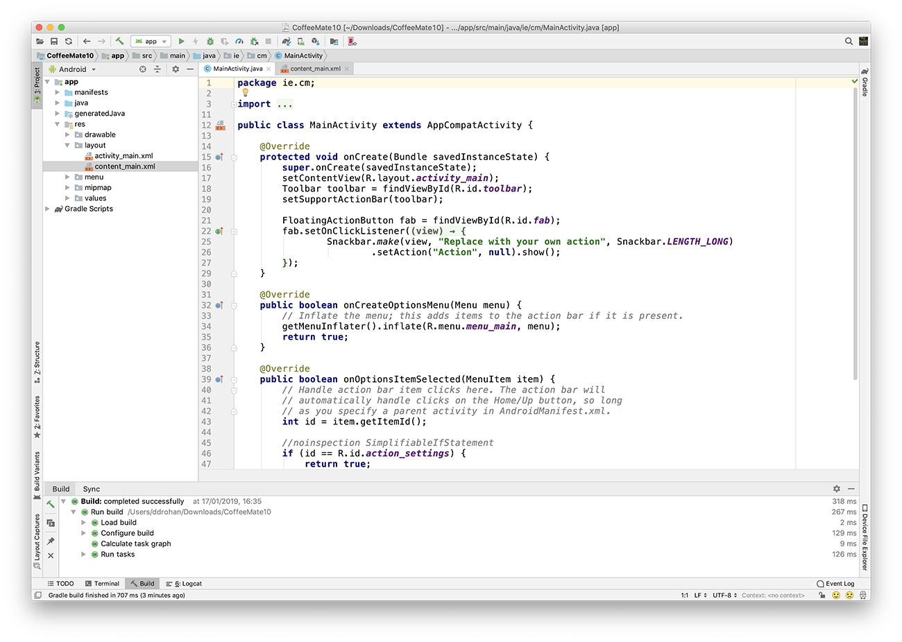
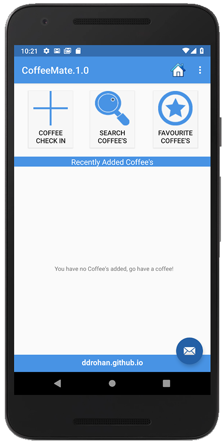

-
Objectives
This lab introduces our Case Study CoffeeMate with a look at some of the basic features we can implement in an Android App.
In this Lab, you will be required to develop the first version of our Case Study, CoffeeMate.1.0. We'll build on this project over the coming weeks & months. On completion of this lab you'll be able to
add multiple activities & associated layouts to an Android project
switch between 'screens'
display a simple dialog window
display and add functionality to a custom menu
-
Your Android Project - "CoffeeMate.1.0"
In Android Studio, select File->New->New Project, or if it's a first run, select "Start a new Android Studio Project"

Press "Next" (or click the option) and then give the project a name: 'CoffeeMate.1.0'
It's recommended you change the default package name also and it's probably worth changing the Project Location too but you can take the default if you wish.
Select the Platform(s) you want your app to run on - we'll just stick with Phone & Tablet and choose an appropriate SDK.
You should choose an Empty Activity as your activity type on the next screen

and name it as in the screenshot below
After you press "Finish", you should now have something similar to the following:


Next, as an exercise, select File->Close Project, to close the project so we can import it again.
If no other Projects are open you will be displayed with
So, you can either
- Select the project from the Recent Projects List (on the left) or, if the project you want isn't in the List
- Import the project, so, select "Open an Existing Android Project" and navigate to the Project folder where you android app is stored (like 'CoffeeMate.1.0' below)
Once the project is open again, familiarise yourself with the project layout - the initial xml layout or "screen" is first displayed, this is one of the many resources you will be using and creating throughout this module. We will experiment later with modifying this layout, but first you should run the application.
Select the Project (CoffeeMate.1.0) and then select the 'Play' button.
If you haven't done so already, you will be asked to select/create an AVD (Android Virtual Device), as follows:
and
and
and
The Virtual Device is very heavy on resources so you may need to choose settings below what is selected in the Screenshots.
Otherwise, use the settings as above and your first Android App should launch, (Once you've unlocked the device!):
-
Setup & Starter Resources
To make things a bit easier, you can download some starter resources for this lab here - Resources. It contains all of drawable (image) resources you'll need to complete this lab. So replace your existing drawable folder with this one once you've extracted the archive somewhere on your hard disk.
Once you have the drawable folder 'updated'
The initial App will look like this

and we already have the 'FloatingActionButton' operational, like so

In this lab, you are required to do the following:
"Wire up" the Coffee Check-In Button to our 'Add' activity to display the Add screen.
Implement the 'Standard Menu' so when a user selects the menu option on the device, they are presented with a list of options in a menu format.
Implement the 'Help' activity, so that when a user selects 'Help' from the 'Standard Menu', the Help Screen is displayed
Complete the 'Add' activity to allow a user to 'add' a new coffee to the current list of coffees.
The following steps will guide you through these requirements, so we'll start with the most straightforward requirement, getting our Coffee Check-In Button working.
-
Adding a Coffee - Switching to our 'Coffee Check In' Screen
First of all, have a quick look at the resource layout (content_home.xml) we will be referring to, and familiarise yourself with the properties of the different buttons, especially the onClick, as you will have to refer to these in the following steps.

We won't need to implement specific Event Listeners for this step, instead we will use the simpler 'direct binding' approach where we associate a method to be triggered when our button is pressed.
So, navigate to the onClick property of the 'Coffee Check In' button (as above) and enter add for the method name.
Next, open your Home.java activity and add the following method
public void add(View v) { goToActivity(this,add.class,null); }You should run your app at this stage just to see if it behaves like it should.
You will, more than likely, get an error along the lines of
android.content.ActivityNotFoundException: Unable to find explicit activity class {ie.cm.models/ie.cm.activities.Add};Can you work out why, and more importantly, how to fix it? (Hint : it involves the AndroidManifest.xml file and you can find the answer in the section on Intents already covered in the lectures).
But before we modify the AndroidManifest File, there's a few other additions to the project we need to make, i.e.
- we need to add a new style so we can display our Add screen properly (as it's layout is not part of a template, like so
<style name="AppTheme.ActionBar"> <item name="windowActionBar">true</item> <item name="windowNoTitle">false</item> </style>and
- we need to modify our RatingBar so we get to see nice blue stars (and not grey ones!) so set the following property
android:progressTint="@color/bannerBGColor"- Finally, add the following to your manifest file
<activity android:name=".activities.Add" android:label="@string/addACoffeeLbl" android:theme="@style/AppTheme.ActionBar" > </activity>and run the app again to confirm everything is ok so far.
and when you click 'Coffee Check In' you should get
Next we'll start with implementing the menu.
-
Our Custom Menu
On completion of this step we'll have something like this:
which we sort of already have, but we'll add functionality. So once again, have a quick look at the resource (below) we will use to create our menu, and familiarise yourself with the "id's" of the different options, you will have to refer to these later on in your code.

and the xml...

Maybe you noticed (or maybe you didn't!) that our 'Add' screen has no menu - this is because we never 'inflated' the menu in our activity.
So, open up the Base.java Activity class, and add in or "override" the methods we need to implement our menu (as we want the same menu for all our screens) i.e. onCreateOptionsMenu(). We are overriding the method here so that the menu will be available to all classes that extend from our base class. You could also just move the method from Home.java to Base.java too.
Run your app again just to confirm you can now see the menu on all screens.
Now, to keep things as simple as possible, we're going to take the same approach with our Menu as we did with our 'Coffee Check In Button' - we'll use the onClick property to bind a menu item to a particular method in our activity.
So open up your main_menu.xml and add the following to each of the menu items (as in the screenshot below)

Then, open up your Base.java and add the following methods
public void menuInfo(MenuItem m) { openInfoDialog(this); } public void menuHelp(MenuItem m) { // goToActivity(this, Help.class, null); } public void menuHome(MenuItem m) { goToActivity(this, Home.class, null); }You'll notice we haven't implemented the menuHelp method - as we don't have our Help activity yet but you can still run your app and confirm that the other two methods function as expected.
Once you have these two methods implemented, that's basically it, but as we really only have two activities at the moment (our 'Home' & Add Activities) the menu won't do much, but we'll add to this once we have our Help Screen completed - run your app again to test your menu and see if it displays the way it's supposed to. (something like below for the 'info' option)
Next we'll add in our new Help screen.
-
The Help Screen
To implement the Help feature of our App we need to :
- create a new Activity (Help.java) and associate it with our help layout.
- associate this activity with our menu.
Using Android Studio, go to File->New->Activity and create a new Empty Activity in the ie.cm.activities package and Deselect 'Generate layout file' (like below) as we already have one in our resources.

Make sure to DESELECT the option to create a menu for this screen - we will be using our own menu for all screens, so if one gets created for you, delete this menu resource and remove the associated method in the Activity class.
Extend your Help.java Activity from "Base" as the parent class and set the correct layout, so your onCreate() method should look something like this
public void onCreate(Bundle savedInstanceState) { super.onCreate(savedInstanceState); setContentView(R.layout.help); }Your Help Screen layout is already completed but you can design it whatever way you want really, so take some time to customise this layout to your own liking.
Once you're happy with your own Help Screen, you can now 'uncomment' your menuHelp method in your Base class, so go ahead and do that and test again to confirm and you should have something like this
Now we can move on to actually adding a Coffee to our App.
-
Adding a Coffee - Saving our data in 'Coffee Check In'
Our Add screen looks as follows:

So, first of all, we need to bind to each of the widgets to 'get at' the new coffee details (possibly like this) - where would be the best place for this code?
name = (EditText) findViewById(R.id.nameEditText); shop = (EditText) findViewById(R.id.shopEditText);Specifically, the add() method needs to
Grab all the values that the user has entered for the Coffee details, validate them & create a Coffee object
Add the Coffee object to our list (coffeeList)
Launch the "Home" Activity to return to the home screen, to display the current list of Coffee objects (probably via a call to goToActivity())
Without referring to the notes (too much!) try and get this working, but here's some extracts to get you started.
coffeeName = name.getText().toString(); coffeeShop = shop.getText().toString(); try { coffeePrice = Double.parseDouble(price.getText().toString()); } catch(NumberFormatException e){ coffeePrice = 0.0; } ratingValue = ratingBar.getRating();and this
Coffee c = new Coffee(coffeeName, coffeeShop, ratingValue, coffeePrice,0); coffeeList.add(c); goToActivity(this,Home.class,null);

Run the App once again to confirm the add feature is now implemented.
However, if you're not seeing your list of coffees (albeit in a very rudimentary list!) you might need to take another look at your Home Activity and try and work out what's missing - but don't worry, it's in the solution.
-
Exercises
Solution
This is a solution to the lab:
Exercise
In this lab you have experimented with Activities and menus:
Experiment with adding in an additional Activity and and extra menu option which switches to that Activity
Consider using some logos or icons not in the resources folder, but ones you have found yourself as the menu option?